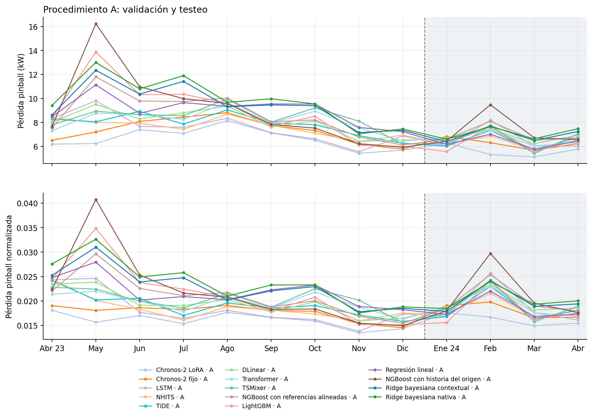
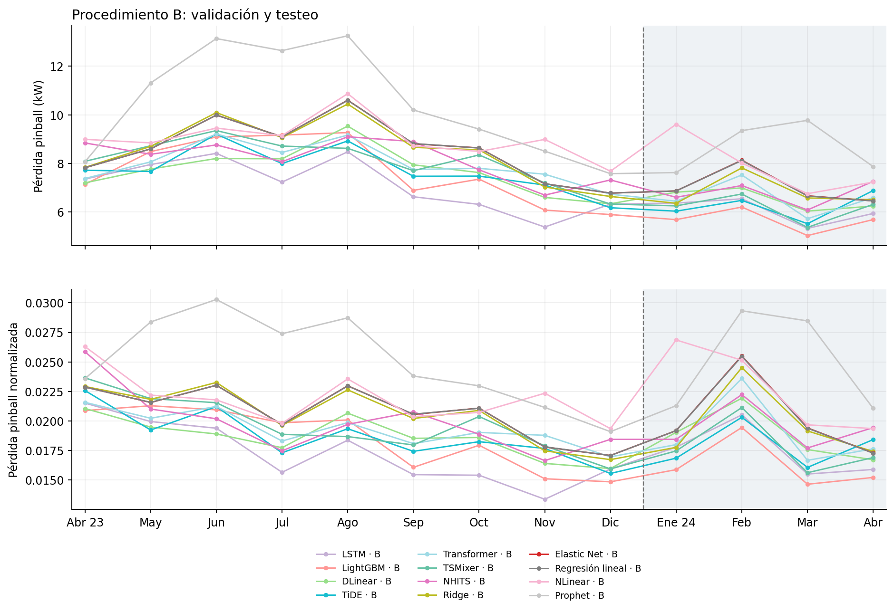
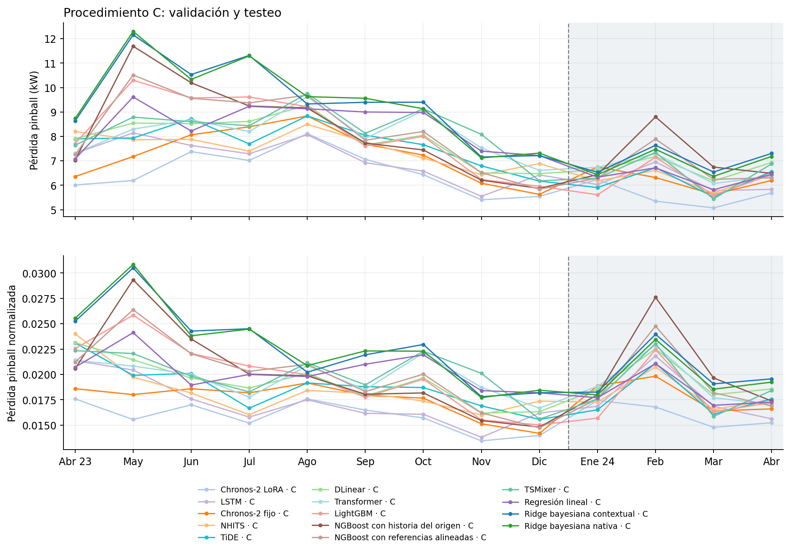

Suplemento S5. Trayectorias mensuales y búsquedas
Este suplemento reúne dos detalles de la comparación: la evolución mensual de las pérdidas y la cantidad de configuraciones evaluadas durante la búsqueda. Las trayectorias utilizan predicciones de meses posteriores al entrenamiento de cada predictor; los meses de validación participaron además en la elección de las configuraciones.
S5.1 Validación completa, diciembre y testeo
Diciembre es el último mes de validación: sus pronósticos utilizan entrenamiento hasta noviembre. El testeo utiliza una historia creciente desde enero–diciembre de 2023. La columna de diciembre conserva una evaluación fuera del entrenamiento del predictor, aunque ese mes participó en la selección de configuraciones.
Cuadro S5.1. Pérdida pinball normalizada en validación, diciembre de 2023 y testeo.
| Modelo | Procedimiento | Validación abril–diciembre | Diciembre | Testeo enero–abril | Cambio testeo/diciembre |
|---|---|---|---|---|---|
| Chronos-2 LoRA + calibración de cuantiles | C | 0,015836 | 0,013977 | 0,016057 | 14,88 % |
| Chronos-2 LoRA | A | 0,016018 | 0,014330 | 0,016165 | 12,81 % |
| LightGBM + conforme | B | 0,018563 | 0,014854 | 0,016303 | 9,75 % |
| LSTM + conforme | B | 0,017232 | 0,015940 | 0,017429 | 9,34 % |
| TSMixer + conforme | B | 0,019650 | 0,015945 | 0,017785 | 11,54 % |
| LSTM + calibración de cuantiles | C | 0,017208 | 0,016191 | 0,017786 | 9,85 % |
| TiDE + calibración de cuantiles | C | 0,018764 | 0,015557 | 0,017809 | 14,48 % |
| LightGBM + calibración de cuantiles | C | 0,019897 | 0,015023 | 0,017911 | 19,22 % |
| TiDE + conforme | B | 0,018735 | 0,015561 | 0,017919 | 15,15 % |
| Chronos-2 con pesos fijos + calibración de cuantiles | C | 0,017492 | 0,014186 | 0,017920 | 26,32 % |
| NHITS + calibración de cuantiles | C | 0,018357 | 0,017364 | 0,018019 | 3,77 % |
| Chronos-2 con pesos fijos | A | 0,017664 | 0,014524 | 0,018026 | 24,11 % |
| NHITS | A | 0,018527 | 0,017513 | 0,018205 | 3,95 % |
| Regresión lineal cuantílica + calibración de cuantiles | C | 0,020341 | 0,018188 | 0,018245 | 0,32 % |
| Regresión lineal cuantílica | A | 0,021852 | 0,018216 | 0,018349 | 0,73 % |
| LightGBM cuantílico | A | 0,021712 | 0,015148 | 0,018381 | 21,34 % |
| TiDE cuantílico | A | 0,019131 | 0,015813 | 0,018583 | 17,52 % |
| TSMixer + calibración de cuantiles | C | 0,020064 | 0,015588 | 0,018720 | 20,09 % |
| DLinear + conforme | B | 0,018598 | 0,015974 | 0,018818 | 17,81 % |
| Transformer + conforme | B | 0,019344 | 0,016966 | 0,018981 | 11,88 % |
| TSMixer cuantílico | A | 0,020249 | 0,015589 | 0,019043 | 22,16 % |
| LSTM cuantílica | A | 0,018352 | 0,017335 | 0,019071 | 10,01 % |
| Transformer cuantílico | A | 0,019723 | 0,016261 | 0,019084 | 17,36 % |
| Transformer + calibración de cuantiles | C | 0,019647 | 0,016671 | 0,019117 | 14,67 % |
| NGBoost con referencias alineadas + calibración de cuantiles | C | 0,020021 | 0,014721 | 0,019356 | 31,48 % |
| DLinear + calibración de cuantiles | C | 0,019221 | 0,016324 | 0,019402 | 18,86 % |
| NHITS puntual + conforme | B | 0,019891 | 0,018448 | 0,019463 | 5,50 % |
| DLinear cuantílico | A | 0,019535 | 0,016458 | 0,019646 | 19,37 % |
| Ridge + conforme | B | 0,020623 | 0,016732 | 0,019716 | 17,84 % |
| Ridge bayesiana con dispersión nativa + calibración de cuantiles | C | 0,022921 | 0,018442 | 0,019801 | 7,37 % |
| Ridge bayesiana con dispersión contextual | A | 0,022928 | 0,018509 | 0,020089 | 8,54 % |
| NGBoost con referencias alineadas | A | 0,020914 | 0,015437 | 0,020201 | 30,85 % |
| Ridge bayesiana con dispersión contextual + calibración de cuantiles | C | 0,022845 | 0,018188 | 0,020208 | 11,11 % |
| Regresión lineal + conforme | B | 0,020744 | 0,017080 | 0,020336 | 19,06 % |
| Elastic Net + conforme | B | 0,020743 | 0,017083 | 0,020353 | 19,14 % |
| Ridge bayesiana con dispersión nativa | A | 0,023863 | 0,018799 | 0,020449 | 8,78 % |
| NGBoost con historia del origen + calibración de cuantiles | C | 0,019970 | 0,014802 | 0,020654 | 39,53 % |
| NGBoost con historia del origen | A | 0,021986 | 0,014939 | 0,021219 | 42,04 % |
| NLinear + conforme | B | 0,021828 | 0,019354 | 0,022761 | 17,61 % |
| Prophet + conforme | B | 0,025047 | 0,019099 | 0,025044 | 31,13 % |
| Referencia estacional | Referencia | 0,043225 | 0,032510 | 0,048657 | 49,67 % |
Fuente: elaboración propia. Cambio relativo = 100 × (pérdida de testeo / pérdida de diciembre − 1).
S5.2 Trayectorias mensuales de pérdida por procedimiento
Las figuras siguientes reúnen las predicciones fuera de muestra de abril–diciembre de 2023 y enero–abril de 2024. Enero–marzo de 2023 conforman la historia inicial de entrenamiento y no se incorporan como errores de ajuste a estas curvas. Se presentan la pérdida pinball en kW y su versión dividida por la media mensual del valor absoluto de la demanda. Cada línea promedia las métricas entre ejecuciones, sin promediar previamente las predicciones. El área sombreada corresponde al testeo.
Figura S5.1. Evolución mensual de la pérdida pinball del procedimiento A.

Nota. Arriba: pérdida en kW. Abajo: pérdida normalizada. La línea vertical separa validación y testeo.
Fuente: elaboración propia a partir de las predicciones guardadas.
Figura S5.2. Evolución mensual de la pérdida pinball del procedimiento B.

Nota. Arriba: pérdida en kW. Abajo: pérdida normalizada. La línea vertical separa validación y testeo.
Fuente: elaboración propia a partir de las predicciones guardadas.
Figura S5.3. Evolución mensual de la pérdida pinball del procedimiento C.

Nota. Arriba: pérdida en kW. Abajo: pérdida normalizada. La línea vertical separa validación y testeo.
Fuente: elaboración propia a partir de las predicciones guardadas.
El denominador mensual es común a todos los modelos: la pérdida cruda y la normalizada producen el mismo orden dentro de cada mes. Entre meses, la variación del denominador modifica la escala relativa de las pérdidas.
S5.3 Ensayos de las búsquedas
El Cuadro S5.2 presenta los ensayos registrados durante la búsqueda. Un ensayo completo evalúa todos los meses previstos; uno podado se detiene según el desempeño parcial y la regla de la Sección 4.7.2. Los ensayos fallidos se informan por separado. Las repeticiones de las configuraciones elegidas con otras semillas y los reajustes mensuales posteriores corresponden a otras etapas y quedan fuera de estos recuentos.
Cuadro S5.2. Ensayos completos, podados y fallidos por modelo y procedimiento.
| Modelo | Vía | Completos | Podados | Fallidos |
|---|---|---|---|---|
| Ridge bayesiana con dispersión nativa | A | 55 | 0 | 0 |
| DLinear cuantílico | A | 46 | 9 | 0 |
| LightGBM cuantílico | A | 58 | 1 | 0 |
| LSTM cuantílica | A | 37 | 18 | 0 |
| NGBoost con historia del origen | A | 60 | 0 | 0 |
| TiDE cuantílico | A | 56 | 2 | 0 |
| Transformer cuantílico | A | 57 | 2 | 0 |
| TSMixer cuantílico | A | 68 | 1 | 0 |
| DLinear + conforme | B | 68 | 14 | 0 |
| LightGBM + conforme | B | 55 | 2 | 0 |
| LSTM + conforme | B | 45 | 10 | 0 |
| NLinear + conforme | B | 61 | 19 | 0 |
| Regresión lineal + conforme | B | 79 | 0 | 0 |
| Prophet + conforme | B | 55 | 7 | 0 |
| Ridge + conforme | B | 65 | 1 | 0 |
| TiDE + conforme | B | 55 | 0 | 0 |
| Transformer + conforme | B | 66 | 2 | 0 |
| TSMixer + conforme | B | 100 | 0 | 0 |
| Chronos-2 LoRA | A | 61 | 0 | 0 |
| NHITS | A | 53 | 2 | 0 |
| Elastic Net + conforme | B | 54 | 1 | 1 |
| Ridge bayesiana con dispersión contextual | A | 60 | 0 | 0 |
| NGBoost con referencias alineadas | A | 55 | 0 | 0 |
| Regresión lineal cuantílica | A | 51 | 4 | 0 |
| NHITS puntual + conforme | B | 50 | 5 | 0 |
| Ridge bayesiana con dispersión nativa + calibración de cuantiles | C | 57 | 0 | 0 |
| DLinear + calibración de cuantiles | C | 70 | 0 | 0 |
| LightGBM + calibración de cuantiles | C | 70 | 0 | 0 |
| LSTM + calibración de cuantiles | C | 91 | 0 | 0 |
| NGBoost con historia del origen + calibración de cuantiles | C | 100 | 0 | 0 |
| TiDE + calibración de cuantiles | C | 80 | 0 | 0 |
| Transformer + calibración de cuantiles | C | 67 | 0 | 0 |
| TSMixer + calibración de cuantiles | C | 55 | 0 | 0 |
| Chronos-2 LoRA + calibración de cuantiles | C | 83 | 0 | 0 |
| Chronos-2 con pesos fijos + calibración de cuantiles | C | 67 | 0 | 0 |
| NHITS + calibración de cuantiles | C | 67 | 0 | 0 |
| Ridge bayesiana con dispersión contextual + calibración de cuantiles | C | 55 | 0 | 0 |
| NGBoost con referencias alineadas + calibración de cuantiles | C | 68 | 0 | 0 |
| Regresión lineal cuantílica + calibración de cuantiles | C | 55 | 0 | 0 |
Fuente: registros de los estudios de optimización.